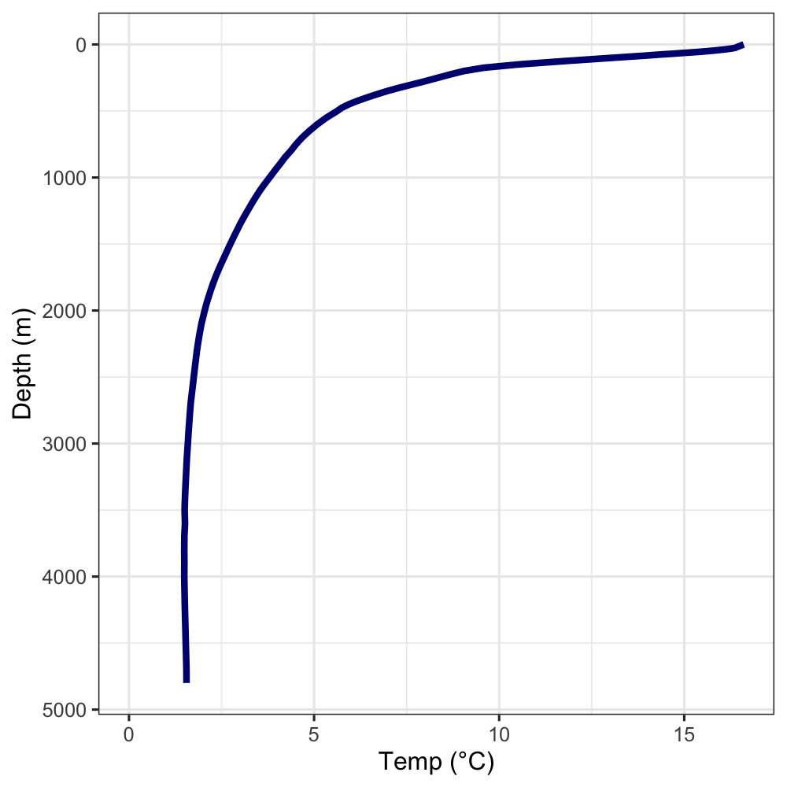

INFO101: Tabular Data
This is the first module of the Informatics track. By the end of this module, you’ll learn how to:
Organize tabular data using “tidy” principles
Create data frames in R
Extract data frames using 2-D indexing
Pre-class preparation
Set up the INFO101 module on your computer (see Module Setup and Submission). There you’ll find the guided notes and exercises to accompany these recorded lectures.
Lectures
What makes data tidy?
Creating data frames in R
Indexing into rows and columns
In-class activity
The World Ocean Atlas (WOA) is a very important dataset in marine science. It is the easiest way to access data from the World Ocean Database (WOD), which is the most comprehensive collection of physical and biogeochemical oceanographic data ever assembled. The WOD is so valuable because it has been extensively reviewed and standardized, combining over 250 years of measurements in one place. Whereas the WOD is highly detailed, the WOA is a higher-level summary of this amazing dataset. The WOA is what we will be using today.
By the end of this module, you’ll make a figure similar to the one below. This figures shows the relationship between temperature and depth in the ocean about 500 miles west of here. Your figure won’t be as clean yet, but you’ll learn how to do that in COMM101!

Questionable organization choices
Yes, the WOA is an incredible resource. However, you will soon discover that it does not adhere to the tidy data principles you learned in the pre-class videos. This makes the dataset quite challenging to work with in R! Nothing gives you an appreciation for tidy data quite like struggling with weird data.
First, download the latest version of the WOA (available here on Drive) and put it in your info101 directory.
P1 Call the function dir() at the console. This lists the files in your project’s directory. Do you see woa.csv in the list? (If you don’t, move it to the right place before proceeding.)
Let’s look at the contents of woa.csv in a spreadsheet viewer. You can use Excel if you have it on your computer or follow this link to view it in Google Sheets. Critique the organization of this spreadsheet according to the characteristics of tidy data. Recall, those are:
- Make it a rectangle
- Don’t confuse the computer
- Consistent names and formats
P2 Critique the organization of woa.csv according to the characteristics of tidy data.
Importing data
Now we’re going to import the WOA into R. By the end of this section we will have a data frame with columns for latitude, longitude, and the many depth bins. Which is to say, you’re importing the wide-format version of the WOA, which is how this dataset is distributed.
P3 Call read.csv() on woa.csv. What error message do you get? What do you think that means?
It may help to look at the contents of woa.csv in a spreadsheet viewer again.
Let’s fix that error! Check the help page for read.csv() and look at the available parameters for read.table(). These parameters also apply to read.csv(). Which parameter do you think can help us avoid the problem in P3?
P4 Re-write the call to read.csv() to avoid the error in P3.
Now we have a data frame with the WOA data. Call View() on your data frame to see the data in RStudio’s viewer. You’ll notice we still have two issues.
- The column names are very messy.
- The depth variable is spread across 102 columns!
We’ll fix the first issue in this activity. The solution to the second issue (i.e., switching from wide to long format) is a technique called pivoting, which is outside the scope of this module. In a later section I will provide you with the pivoted, long-format version of the WOA in the course package.
Fix the column names
We need a character vector with clean column names to replace the messy ones. The first two columns are latitude and longitude, the next 102 columns are the different depths. First, we’re going to make a numeric vector of the different depth values. From there, we’ll create a character vector with clean column names.
P5 Fill in the blanks below to create a vector of the depth values.
seq() creates a sequence of values. Can you figure out how it works from context? Alternatively, check out the help page for details.
depths <- c(
seq(0, 100, by = 5),
seq(???, ???, by = 25),
seq(???, ???, by = ???),
seq(???)
)P6 Create a vector called woa_colnames with clean names for all 104 columns. Make them the column names of your WOA data frame.
paste0() is a useful command for making column names (and other character vectors) from numeric vectors.
Analyzing wide-format data
To show why long format is considered tidier than wide format, we’re going to try summarizing the wide-format version of the WOA. Then you’ll do the same with the long-format version and compare the differences.
Summary statistics (wide-format)
Try to use indexing and summary statistic functions to answer the following question. This won’t be straightforward! The function mean() doesn’t work across columns in a data frame. You’ll have to get creative to figure out a solution. But in PROG101-PROG103 you learned the skills you need to accomplish it.
P7 What is the mean water temperature globally in the twilight zone (200-1000m depth)?
By globally I mean across all locations, so no filtering by latitude or longitude necessary.
Analyzing long-format data
At this point you’ve imported a gnarly CSV file and tried analyzing it in wide-format. Not easy, is it? In this final section, you’ll get a taste of how long-format data frames make data analysis and visualization easier.
A long-format version of the WOA is availabile in the course companion package, marinecs100b, under the name woa_long. Explore it on your own (e.g., using the help page or View()) to get a feel for it, then proceed to the following sections.
Summary statistics (long-format)
This will be the same question as before, but with the long-format data instead of the wide-format.
P8 Using woa_long, find the mean water temperature globally in the twilight zone.
P9 Compare and contrast your solutions to P8 and P9.
What’s the temperature of the Mariana Trench?
The Mariana Trench is located 11°21′N, 142°12′E. You’re going to filter woa_long to the nearest location and make a figure of the temperature profile with depth. This will end up looking similar to the “Temperature depth profile 500 miles west of Santa Barbara” figure from the beginning of this activity.
This is the first time you’re using ggplot directly, which is the most popular tool for making figures in R. You’ll learn more about how it works in COMM101.
P10 Create a variable called mariana_temps. Filter woa_long to the rows in the location nearest to the coordinates listed above.
The sample code provided below will make a temperature-depth profile of the Mariana Trench using the variable you created in P10. Run it to create a figure.
# ggplot is a tool for making figures, you'll learn its details in COMM101
ggplot(mariana_temps, aes(temp_c, depth_m)) +
geom_path() +
scale_y_reverse()P11 Interpret your temperature-depth profile. What’s the temperature at the surface? How about in the deepest parts? Over what depth range does temperature change the most?
Recap and next steps
You learned a lot in this module!
What makes data tidy?
How to create, import, and index into data frames
A taste of analyzing and visualizing data
You also debugged data import errors for the first time. Talk to any marine scientists working with data - that’s definitely a skill they wish they had learned earlier!
Fill out the INFO101 reflection to complete this module.